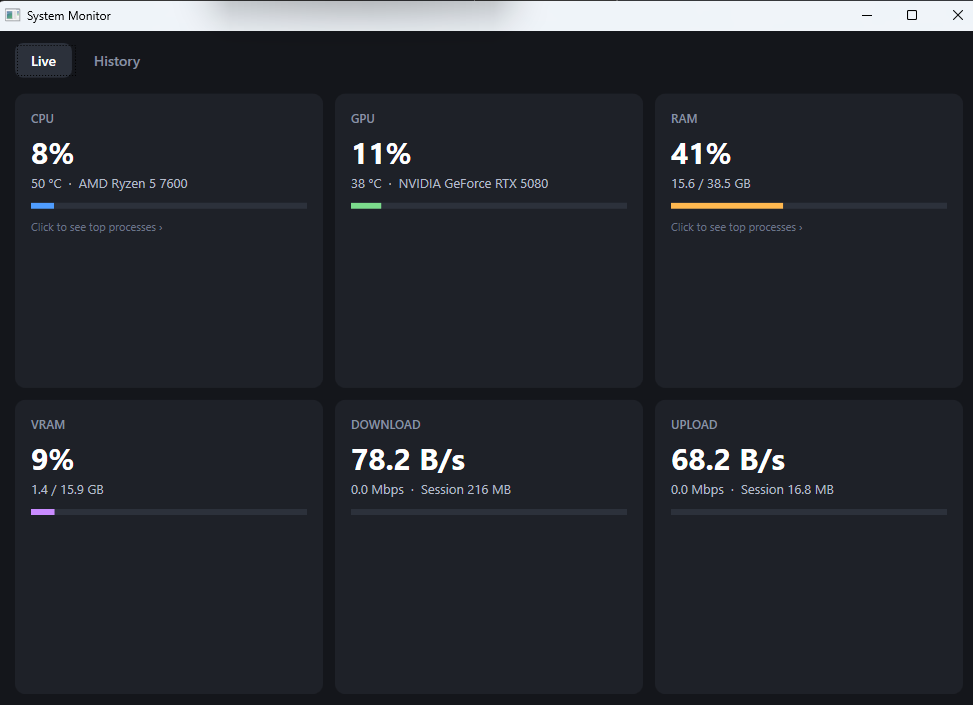
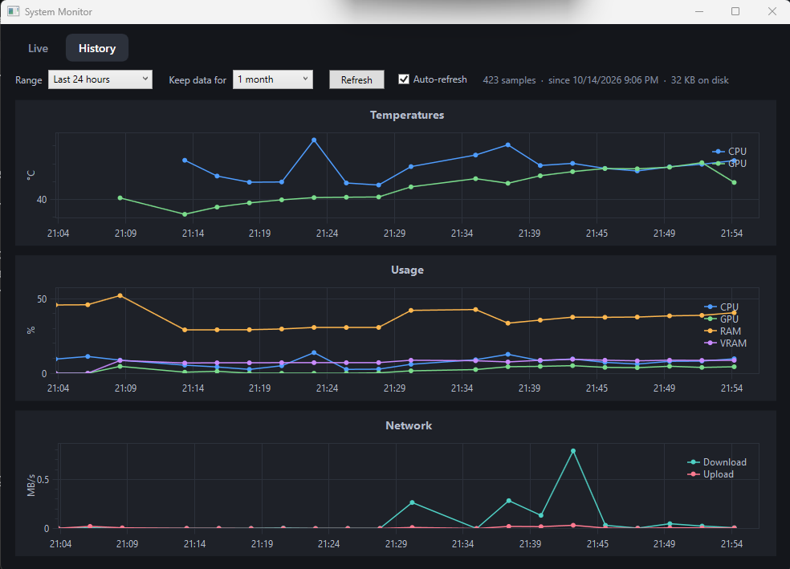

Custom Metrics Monitoring App
A Windows dashboard for real time hardware stats and trends using C# and WPF
Motivation
While I was planning my custom sleeper PC build, I needed a way to track the temperature metrics over time. Normally, I'd use Hardware Info, but the feature to track data automatically is locked behind a paywall. I didn't want to risk frying my limited component selection, so I decided to make an automatic tracker myself, and got a little carried away in the process.
Requirements
- Sensing: Of course, if it can't measure CPU and GPU temps, the whole app is unnecessary.
- Logging: If I can't track the data overtime, I'll be oblivious to any abnorval behavior.
- Automation: Having it run automatically saves me from forgetting to use it.
Implementation

Live Metric Cards

Interactive Trend Graphs
- Live Dashboard Cards update frequently with CPU/GPU temps, disk usage, and network speed.
- Interactive Graphs Graphs timelines can be changed so you can view current or past trends.
- Minimal Footprint: Has low CPU and RAM (<1% of both) overhead so running it is not wasteful of resources.
Conclusion
This project had more complications than I expected. At first, I thought about doing this in Python, but C# turned out to be the better fit since the sensor library is made for it. On Windows, CPU temps can't be read without administrator permission, and even then they need a driver. Getting them meant using the LibreHardwareMonitorLib library along with the PawnIO driver. Figuring out how to store the data was its own challenge, but I'm glad I got that feature working, since it's what really sets this apart from other monitoring tools for my use. I'm not a UI designer, so the interface is pretty basic, but I'm happy with how it turned out.